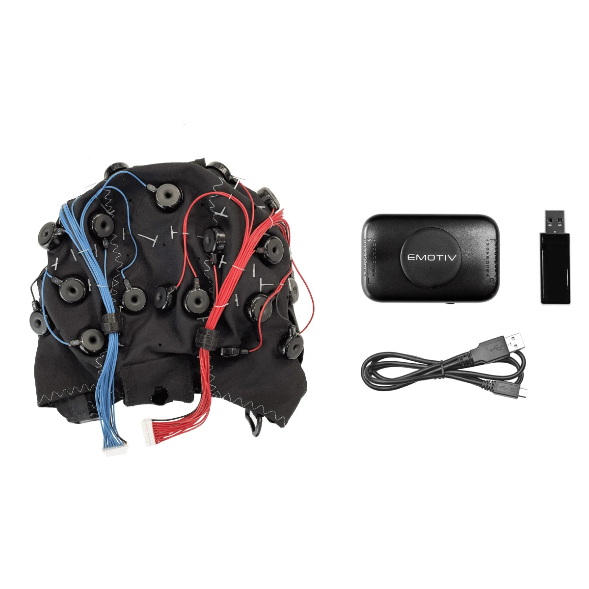
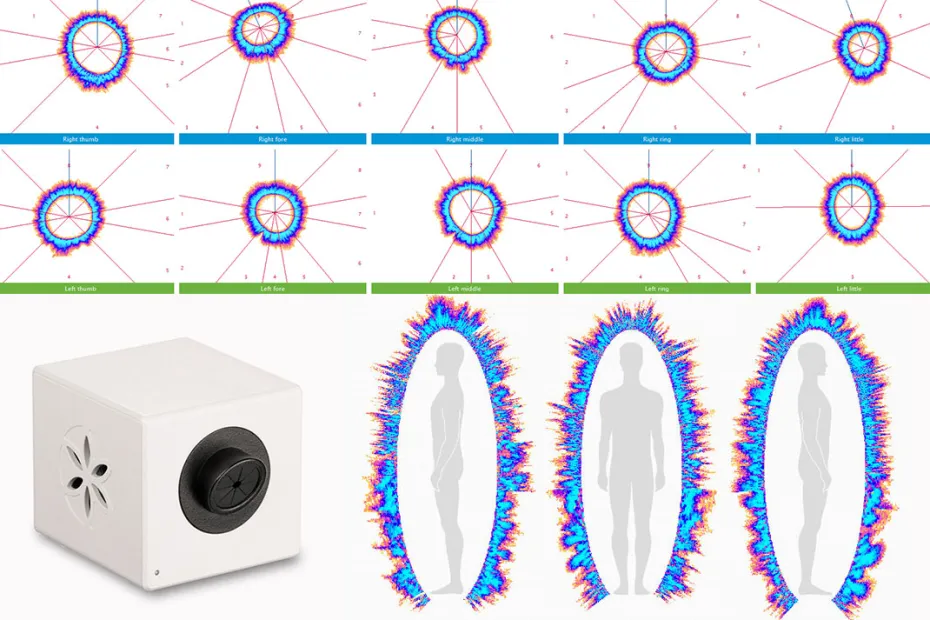
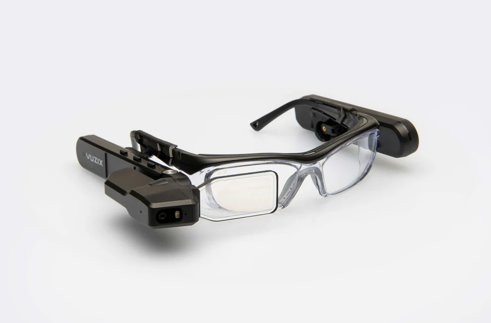
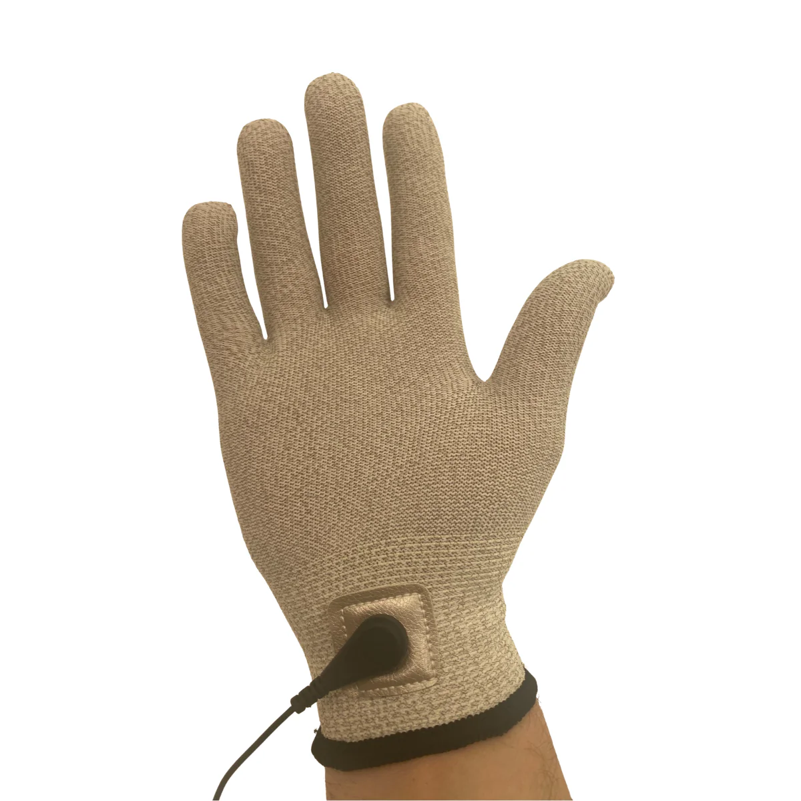
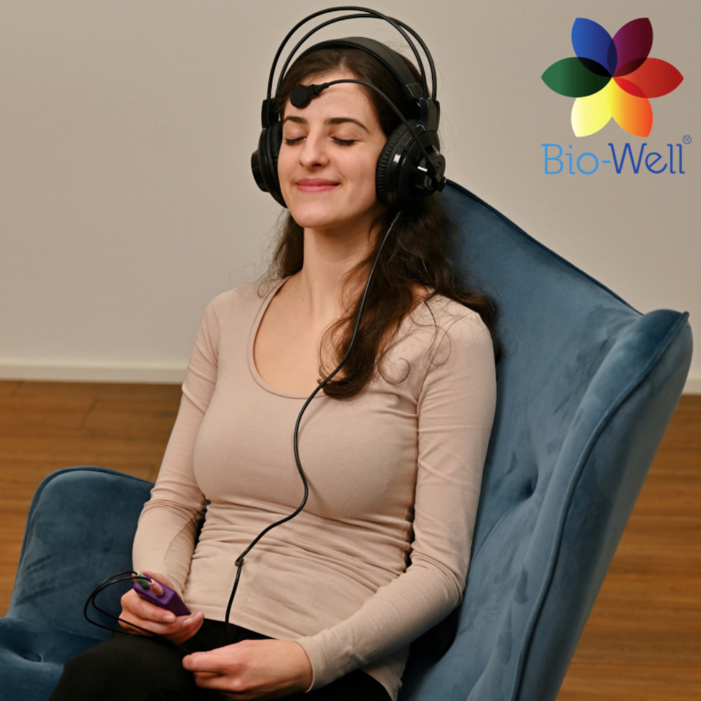
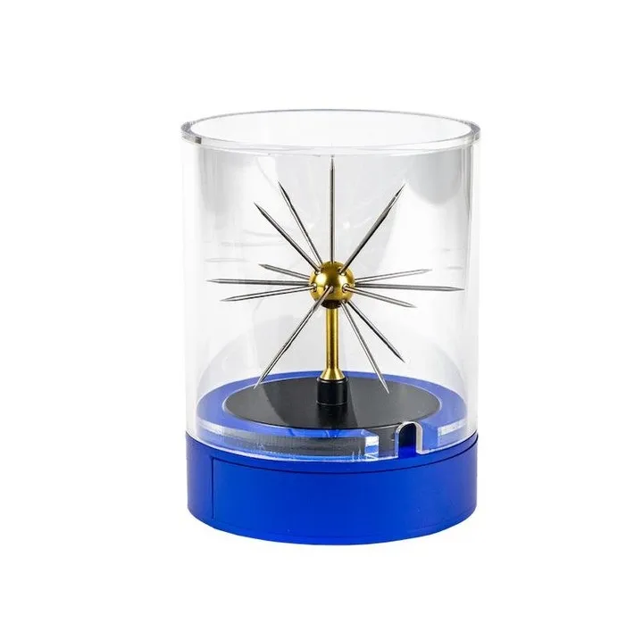
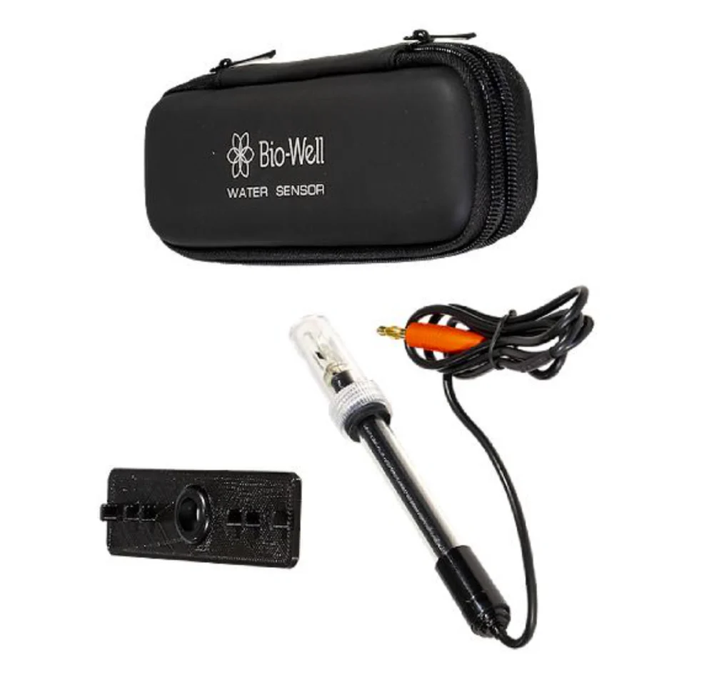

The LNSC utilizes state-of-the-art neurophysiological sensors, biometric imaging, and augmented reality hardware to capture high-dimensional data for our machine learning architectures.

High-density neurophysiological monitoring system used to capture complex temporal EEG signatures for multimodal emotion recognition and affective computing.

A Gas Discharge Visualization (GDV) device that captures electro-photonic emissions to provide objective, real-time data on physiological stress and somatic states.

Augmented reality (AR) interfaces utilized for clinical deployment workflows and visual stimulus presentation in ocular and neurodevelopmental research.

A specialized conductive glove allowing for the continuous, real-time measurement of a subject’s dynamic stress levels and energy states during extended cognitive tasks.

An Extremely High Frequency (EHF) bioresonance device that uses finger scan data to generate customized auditory frequency therapies for stress reduction.

An environmental antenna connected to the Bio-Well system to measure the baseline electro-photonic energy and stress levels of the physical clinical space.

A laboratory-grade ORP sensor used to measure the electro-photonic responses of liquids and biological samples to various environmental stimuli.